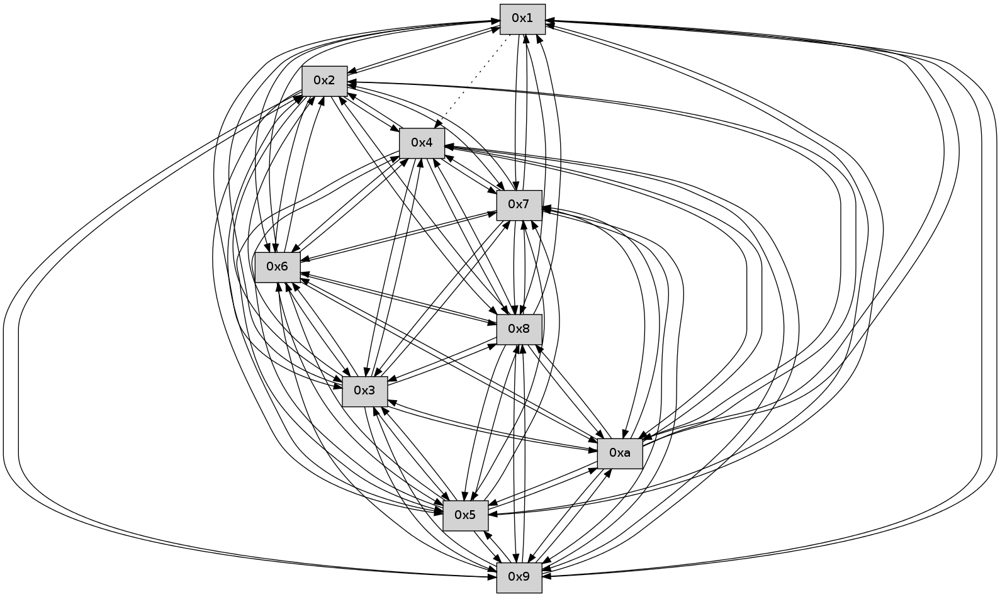

>> << IDX [start] -100 -25 -5 +0 +5 +25 +100 [325.13835001]
 Previous packets
----------------------------------------------------------------------
320.409562 beacon01(faad) #0 coord=01,02,03,04,05,06,07,0a,09,08 cycle=688.0ms assoc
-- color-indic=0 64 bf bf
320.419545 beacon02(faad) #0 coord=01,02,03,04,05,06,07,0a,09,08 cycle=688.0ms assoc 64 2c 8e
320.429546 beacon03(faad) #0 coord=01,02,03,04,05,06,07,0a,09,08 cycle=688.0ms assoc 64 56 c3
320.439545 beacon04(faad) #0 coord=01,02,03,04,05,06,07,0a,09,08 cycle=688.0ms assoc 64 21 29
320.449546 beacon05(faad) #0 coord=01,02,03,04,05,06,07,0a,09,08 cycle=688.0ms assoc 64 5b 64
320.459545 beacon06(faad) #0 coord=01,02,03,04,05,06,07,0a,09,08 cycle=688.0ms assoc 64 d5 b3
320.469547 beacon07(faad) #0 coord=01,02,03,04,05,06,07,0a,09,08 cycle=688.0ms assoc 64 af fe
320.479551 beacon0a(faad) #0 coord=01,02,03,04,05,06,07,0a,09,08 cycle=688.0ms assoc 64 de f5
320.489551 beacon09(faad) #0 coord=01,02,03,04,05,06,07,0a,09,08 cycle=688.0ms assoc 64 50 22
320.499551 beacon08(faad) #0 coord=01,02,03,04,05,06,07,0a,09,08 cycle=688.0ms assoc 64 2a 6f
320.511314 [Hello(4): seq=209 sym=5,7,6,2,3,9,8,10 sysInfo= stat=5:1,0,0,0/7:14,0,0,0/6:2,0,0,0/2:4,0,0,0/3:8,0,0,0/9:9,0,0,0/8:4,0,0,0/10:5,0,0,0]
320.514367 [Hello(2): seq=206 sym=4,5,7,6,3,9,8,10,1 sysInfo= stat=4:7,0,0,0/5:12,0,0,0/7:6,0,0,0/6:1,0,0,0/3:15,0,0,0/9:3,0,0,0/8:2,0,0,0/10:0,0,0,0/1:0,0,0,0]
320.518024 [Hello(5): seq=209 sym=7,6,4,3,1,9,8,10,2 sysInfo= stat=7:12,0,0,0/6:2,0,0,0/4:8,0,0,0/3:7,0,0,0/1:0,0,0,0/9:8,0,0,0/8:14,0,0,0/10:2,0,0,0/2:8,0,0,0]
320.521856 [Hello(3): seq=209 sym=1,7,6,2,4,8,9,10,5 sysInfo= stat=1:1,0,0,0/7:9,0,0,0/6:5,0,0,0/2:5,0,0,0/4:3,0,0,0/8:11,0,0,0/9:0,0,0,0/10:11,0,0,0/5:1,0,0,0]
----------------------------------------------------------------------
321.197693 beacon01(faad) #0 coord=01,02,03,04,05,06,07,0a,09,08 cycle=688.0ms assoc
-- color-indic=0 64 03 ba
321.207676 beacon02(faad) #0 coord=01,02,03,04,05,06,07,0a,09,08 cycle=688.0ms assoc 64 90 8b
321.217675 beacon03(faad) #0 coord=01,02,03,04,05,06,07,0a,09,08 cycle=688.0ms assoc 64 ea c6
321.227674 beacon04(faad) #0 coord=01,02,03,04,05,06,07,0a,09,08 cycle=688.0ms assoc 64 9d 2c
321.237676 beacon05(faad) #0 coord=01,02,03,04,05,06,07,0a,09,08 cycle=688.0ms assoc 64 e7 61
321.247675 beacon06(faad) #0 coord=01,02,03,04,05,06,07,0a,09,08 cycle=688.0ms assoc 64 69 b6
321.257677 beacon07(faad) #0 coord=01,02,03,04,05,06,07,0a,09,08 cycle=688.0ms assoc 64 13 fb
321.267682 beacon0a(faad) #0 coord=01,02,03,04,05,06,07,0a,09,08 cycle=688.0ms assoc 64 62 f0
321.277682 beacon09(faad) #0 coord=01,02,03,04,05,06,07,0a,09,08 cycle=688.0ms assoc 64 ec 27
321.287681 beacon08(faad) #0 coord=01,02,03,04,05,06,07,0a,09,08 cycle=688.0ms assoc 64 96 6a
321.298830 [Hello(8): seq=152 sym=5,2,3,4,7,6,9,10,1 sysInfo= stat=5:0,0,0,0/2:2,0,0,0/3:0,0,0,0/4:4,0,0,0/7:14,0,0,0/6:1,0,0,0/9:1,0,0,0/10:4,0,0,0/1:11,0,0,0]
321.301537 [Hello(7): seq=209 sym=2,3,5,6,4,8,9,10,1 sysInfo= stat=2:0,0,0,0/3:15,0,0,0/5:8,0,0,0/6:1,0,0,0/4:8,0,0,0/8:9,0,0,0/9:10,0,0,0/10:7,0,0,0/1:9,0,0,0]
321.304876 [Hello(9): seq=152 sym=5,2,3,4,7,6,8,10,1 sysInfo= stat=5:7,0,0,0/2:7,0,0,0/3:7,0,0,0/4:3,0,0,0/7:14,0,0,0/6:4,0,0,0/8:11,0,0,0/10:10,0,0,0/1:1,0,0,0]
321.309664 [Hello(10): seq=141 sym=6,3,2,5,9,8,7,4,1 sysInfo= stat=6:12,0,0,0/3:3,0,0,0/2:14,0,0,0/5:12,0,0,0/9:11,0,0,0/8:5,0,0,0/7:4,0,0,0/4:8,0,0,0/1:3,0,0,0]
321.312819 [Hello(6): seq=209 sym=2,3,5,4,7,9,8,10,1 sysInfo= stat=2:4,0,0,0/3:1,0,0,0/5:5,0,0,0/4:3,0,0,0/7:8,0,0,0/9:11,0,0,0/8:15,0,0,0/10:14,0,0,0/1:11,0,0,0]
----------------------------------------------------------------------
321.985824 beacon01(faad) #0 coord=01,02,03,04,05,06,07,0a,09,08 cycle=688.0ms assoc
-- color-indic=0 64 c7 b4
321.995807 beacon02(faad) #0 coord=01,02,03,04,05,06,07,0a,09,08 cycle=688.0ms assoc 64 54 85
322.005807 beacon03(faad) #0 coord=01,02,03,04,05,06,07,0a,09,08 cycle=688.0ms assoc 64 2e c8
322.015807 beacon04(faad) #0 coord=01,02,03,04,05,06,07,0a,09,08 cycle=688.0ms assoc 64 59 22
322.025807 beacon05(faad) #0 coord=01,02,03,04,05,06,07,0a,09,08 cycle=688.0ms assoc 64 23 6f
322.035807 beacon06(faad) #0 coord=01,02,03,04,05,06,07,0a,09,08 cycle=688.0ms assoc 64 ad b8
322.045806 beacon07(faad) #0 coord=01,02,03,04,05,06,07,0a,09,08 cycle=688.0ms assoc 64 d7 f5
322.055812 beacon0a(faad) #0 coord=01,02,03,04,05,06,07,0a,09,08 cycle=688.0ms assoc 64 a6 fe
322.065811 beacon09(faad) #0 coord=01,02,03,04,05,06,07,0a,09,08 cycle=688.0ms assoc 64 28 29
322.075813 beacon08(faad) #0 coord=01,02,03,04,05,06,07,0a,09,08 cycle=688.0ms assoc 64 52 64
322.086718 [Hello(1): seq=118 sym=2,9,5,10,3,8,6,7 asym=4 sysInfo= stat=2:6,0,0,0/9:15,0,0,0/5:8,0,0,0/10:3,0,0,0/3:1,0,0,0/8:0,0,0,0/6:5,0,0,0/7:10,0,0,0/4:7,0,0,0]
322.089189 [Hello(4): seq=210 sym=5,7,6,2,3,9,8,10 sysInfo= stat=5:2,0,0,0/7:15,0,0,0/6:3,0,0,0/2:5,0,0,0/3:9,0,0,0/9:10,0,0,0/8:5,0,0,0/10:6,0,0,0]
322.092366 [Hello(5): seq=210 sym=7,6,4,3,1,9,8,10,2 sysInfo= stat=7:13,0,0,0/6:3,0,0,0/4:8,0,0,0/3:8,0,0,0/1:0,0,0,0/9:9,0,0,0/8:15,0,0,0/10:3,0,0,0/2:8,0,0,0]
322.097784 [Hello(3): seq=210 sym=1,7,6,2,4,8,9,10,5 sysInfo= stat=1:1,0,0,0/7:10,0,0,0/6:6,0,0,0/2:5,0,0,0/4:3,0,0,0/8:12,0,0,0/9:1,0,0,0/10:12,0,0,0/5:1,0,0,0]
322.100944 [Hello(2): seq=207 sym=4,5,7,6,3,9,8,10,1 sysInfo= stat=4:7,0,0,0/5:13,0,0,0/7:7,0,0,0/6:2,0,0,0/3:0,0,0,0/9:4,0,0,0/8:3,0,0,0/10:1,0,0,0/1:0,0,0,0]
----------------------------------------------------------------------
322.773957 beacon01(faad) #0 coord=01,02,03,04,05,06,07,0a,09,08 cycle=688.0ms assoc
-- color-indic=0 64 7b b1
322.783939 beacon02(faad) #0 coord=01,02,03,04,05,06,07,0a,09,08 cycle=688.0ms assoc 64 e8 80
322.793939 beacon03(faad) #0 coord=01,02,03,04,05,06,07,0a,09,08 cycle=688.0ms assoc 64 92 cd
322.803940 beacon04(faad) #0 coord=01,02,03,04,05,06,07,0a,09,08 cycle=688.0ms assoc 64 e5 27
322.813939 beacon05(faad) #0 coord=01,02,03,04,05,06,07,0a,09,08 cycle=688.0ms assoc 64 9f 6a
322.823939 beacon06(faad) #0 coord=01,02,03,04,05,06,07,0a,09,08 cycle=688.0ms assoc 64 11 bd
322.833941 beacon07(faad) #0 coord=01,02,03,04,05,06,07,0a,09,08 cycle=688.0ms assoc 64 6b f0
322.843945 beacon0a(faad) #0 coord=01,02,03,04,05,06,07,0a,09,08 cycle=688.0ms assoc 64 1a fb
322.853946 beacon09(faad) #0 coord=01,02,03,04,05,06,07,0a,09,08 cycle=688.0ms assoc 64 94 2c
322.863945 beacon08(faad) #0 coord=01,02,03,04,05,06,07,0a,09,08 cycle=688.0ms assoc 64 ee 61
322.875435 [Hello(8): seq=153 sym=5,2,3,4,7,6,9,10,1 sysInfo= stat=5:1,0,0,0/2:3,0,0,0/3:1,0,0,0/4:4,0,0,0/7:15,0,0,0/6:2,0,0,0/9:2,0,0,0/10:5,0,0,0/1:12,0,0,0]
322.880022 [Hello(7): seq=210 sym=2,3,5,6,4,8,9,10,1 sysInfo= stat=2:1,0,0,0/3:0,0,0,0/5:9,0,0,0/6:2,0,0,0/4:8,0,0,0/8:9,0,0,0/9:11,0,0,0/10:8,0,0,0/1:10,0,0,0]
322.883362 [Hello(10): seq=142 sym=6,3,2,5,9,8,7,4,1 sysInfo= stat=6:13,0,0,0/3:4,0,0,0/2:15,0,0,0/5:13,0,0,0/9:11,0,0,0/8:5,0,0,0/7:4,0,0,0/4:8,0,0,0/1:4,0,0,0]
322.886225 [Hello(9): seq=153 sym=5,2,3,4,7,6,8,10,1 sysInfo= stat=5:8,0,0,0/2:8,0,0,0/3:8,0,0,0/4:3,0,0,0/7:14,0,0,0/6:5,0,0,0/8:11,0,0,0/10:11,0,0,0/1:2,0,0,0]
322.888813 [Hello(6): seq=210 sym=2,3,5,4,7,8,10,1 sysInfo= stat=2:5,0,0,0/3:2,0,0,0/5:6,0,0,0/4:3,0,0,0/7:8,0,0,0/8:15,0,0,0/10:14,0,0,0/1:12,0,0,0]
----------------------------------------------------------------------
323.562088 beacon01(faad) #0 coord=01,02,03,04,05,06,07,0a,09,08 cycle=688.0ms assoc
-- color-indic=0 64 4f a9
323.572071 beacon02(faad) #0 coord=01,02,03,04,05,06,07,0a,09,08 cycle=688.0ms assoc 64 dc 98
323.582070 beacon03(faad) #0 coord=01,02,03,04,05,06,07,0a,09,08 cycle=688.0ms assoc 64 a6 d5
323.592073 beacon04(faad) #0 coord=01,02,03,04,05,06,07,0a,09,08 cycle=688.0ms assoc 64 d1 3f
323.602072 beacon05(faad) #0 coord=01,02,03,04,05,06,07,0a,09,08 cycle=688.0ms assoc 64 ab 72
323.612071 beacon06(faad) #0 coord=01,02,03,04,05,06,07,0a,09,08 cycle=688.0ms assoc 64 25 a5
323.622071 beacon07(faad) #0 coord=01,02,03,04,05,06,07,0a,09,08 cycle=688.0ms assoc 64 5f e8
323.632076 beacon0a(faad) #0 coord=01,02,03,04,05,06,07,0a,09,08 cycle=688.0ms assoc 64 2e e3
323.642078 beacon09(faad) #0 coord=01,02,03,04,05,06,07,0a,09,08 cycle=688.0ms assoc 64 a0 34
323.652077 beacon08(faad) #0 coord=01,02,03,04,05,06,07,0a,09,08 cycle=688.0ms assoc 64 da 79
323.667208 [Hello(5): seq=211 sym=7,6,4,3,1,9,8,10,2 sysInfo= stat=7:14,0,0,0/6:4,0,0,0/4:8,0,0,0/3:9,0,0,0/1:0,0,0,0/9:10,0,0,0/8:0,0,0,0/10:4,0,0,0/2:9,0,0,0]
323.669702 [Hello(3): seq=211 sym=1,7,6,2,4,8,9,10,5 sysInfo= stat=1:1,0,0,0/7:11,0,0,0/6:7,0,0,0/2:6,0,0,0/4:3,0,0,0/8:13,0,0,0/9:2,0,0,0/10:13,0,0,0/5:1,0,0,0]
----------------------------------------------------------------------
324.350219 beacon01(faad) #0 coord=01,02,03,04,05,06,07,0a,09,08 cycle=688.0ms assoc
-- color-indic=0 64 f3 ac
324.360201 beacon02(faad) #0 coord=01,02,03,04,05,06,07,0a,09,08 cycle=688.0ms assoc 64 60 9d
324.370202 beacon03(faad) #0 coord=01,02,03,04,05,06,07,0a,09,08 cycle=688.0ms assoc 64 1a d0
324.380202 beacon04(faad) #0 coord=01,02,03,04,05,06,07,0a,09,08 cycle=688.0ms assoc 64 6d 3a
324.390201 beacon05(faad) #0 coord=01,02,03,04,05,06,07,0a,09,08 cycle=688.0ms assoc 64 17 77
324.400201 beacon06(faad) #0 coord=01,02,03,04,05,06,07,0a,09,08 cycle=688.0ms assoc 64 99 a0
324.410202 beacon07(faad) #0 coord=01,02,03,04,05,06,07,0a,09,08 cycle=688.0ms assoc 64 e3 ed
324.420205 beacon0a(faad) #0 coord=01,02,03,04,05,06,07,0a,09,08 cycle=688.0ms assoc 64 92 e6
324.430208 beacon09(faad) #0 coord=01,02,03,04,05,06,07,0a,09,08 cycle=688.0ms assoc 64 1c 31
324.440207 beacon08(faad) #0 coord=01,02,03,04,05,06,07,0a,09,08 cycle=688.0ms assoc 64 66 7c
324.451692 [Hello(7): seq=211 sym=2,3,5,6,4,8,9,10,1 sysInfo= stat=2:2,0,0,0/3:1,0,0,0/5:10,0,0,0/6:3,0,0,0/4:8,0,0,0/8:9,0,0,0/9:12,0,0,0/10:9,0,0,0/1:10,0,0,0]
324.455333 [Hello(10): seq=143 sym=6,3,2,5,9,8,7,4,1 sysInfo= stat=6:14,0,0,0/3:5,0,0,0/2:15,0,0,0/5:14,0,0,0/9:12,0,0,0/8:5,0,0,0/7:4,0,0,0/4:8,0,0,0/1:5,0,0,0]
324.459325 [Hello(8): seq=154 sym=5,2,3,4,7,6,9,10,1 sysInfo= stat=5:2,0,0,0/2:3,0,0,0/3:2,0,0,0/4:4,0,0,0/7:0,0,0,0/6:3,0,0,0/9:3,0,0,0/10:6,0,0,0/1:12,0,0,0]
324.463479 [Hello(9): seq=154 sym=5,2,3,4,7,6,8,10,1 sysInfo= stat=5:9,0,0,0/2:8,0,0,0/3:9,0,0,0/4:4,0,0,0/7:14,0,0,0/6:6,0,0,0/8:11,0,0,0/10:11,0,0,0/1:2,0,0,0]
324.466025 [Hello(6): seq=211 sym=2,3,5,4,7,8,10,1 sysInfo= stat=2:6,0,0,0/3:3,0,0,0/5:7,0,0,0/4:3,0,0,0/7:8,0,0,0/8:15,0,0,0/10:14,0,0,0/1:12,0,0,0]